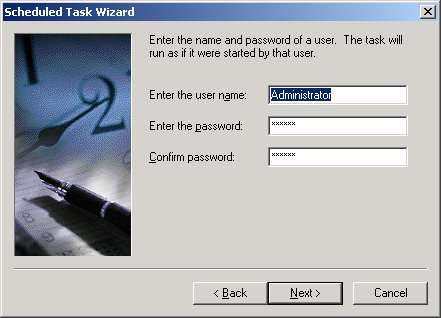

Click Next.
This HOW-TO written by
Rick McGuinness MCSE + I, MCT of
Rix-Web.com
version 1.0, April 12, 2001
Analog is claimed as the most popular web log file analyzer in the world. (Details). Whether running multiple virtual hosts or a single root web server, a useful feature is to run Analog at pre-determined times automatically. This can be accomplished with a batch file and the Windows® 2000 Task Scheduler.
This example was developed and tested using a Windows® 2000 Advanced Server (Service Pack 1), Internet Information Server 5.0 and Analog 4.90 beta 4.
Each Windows® batch file contains:
To create a Windows® batch file:
A Windows® Batch file might look like.
# rix.bat
#
call analog.exe +g"rix.cfg" -G
The " +g"rix.cfg" -G " tells Analog to use the "rix.cfg" config file and to ignore the default analog.cfg file. You may use any of the command line switches in your batch file.
Analog will expect to find the config file (rix.cfg) in the same directory as analog.exe and rix.bat. The batch file can be executed via the command line, double-clicking on a shortcut or double-clicking on the batch file in Windows® Explorer.
If this batch file were executed, it would open a DOS window, run the program and close the window. If you were to add a second line to the batch file "@Pause", it would open a DOS window, run the program and leave the window open saying "Press any key to continue..." at the prompt. Pressing any key would close the window.
You could also go to http://www.rix-web.com/analyzer/, fill in your choices on a web form, and have a configuration file and / or Windows® BAT file emailed back to you (free service). Simply save the .cfg and .bat files in your analog directory and execute.
Using Task Scheduler
To use the scheduling service, in Control
Panel double-click the Scheduled Tasks folder. You can schedule new tasks by
double-clicking Add Scheduled Task, which starts the Scheduled Task wizard. You
can add tasks by dragging scripts, programs, or documents from Windows Explorer
or the desktop to the Scheduled Tasks window. You can also use Task Scheduler
to modify, delete, disable, or stop the tasks that you have scheduled, to view
a log of past scheduled tasks, or to view tasks that are scheduled on a remote
computer.
Double-click "Add Scheduled Task."
Click
Next.
Click
Browse.
Select your
batch file and click Open.
Name your
task - Select when to perform the task - Click Next.
Select
Time, Day and Interval - Click Next.

Enter
account information - Click Next.
Confirm
Scheduled Task - Click Next.
You can easily use Windows® 2000 Task Scheduler to run any number of Analog jobs at predetermined intervals simply by creating and scheduling batch files.